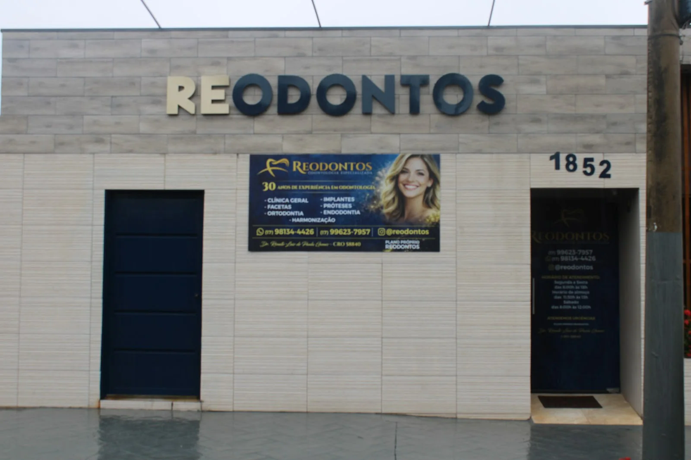
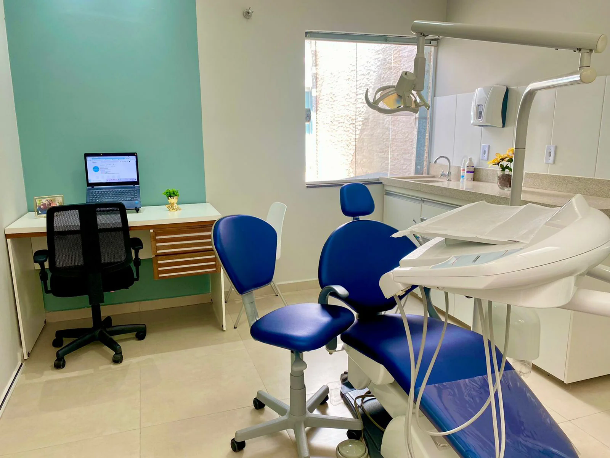
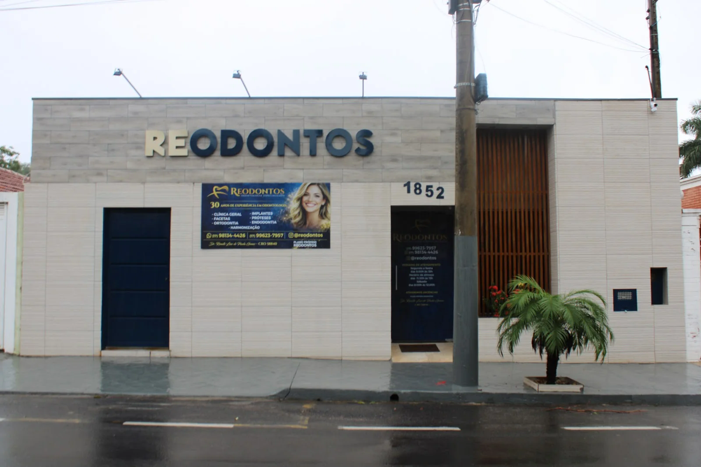

01 / Clínica odontológica · Mirassol/SP
30 anos de experiência. Muitas histórias para cuidar.
REODONTOS. 30 anos de experiência em odontologia e uma equipe com especialistas para cuidar de você e da sua família.
- 30 anos de experiência em odontologia
- Reabilitação de alta complexidade
- Dr. Renato Luiz de Paula Gomes · CRO 58840
- Segunda a sábado

02 / Especialidades
Reabilitação que reúne diferentes áreas.
Clínica geral
Implantes
Próteses e prótese sobre implantes
Facetas
Ortodontia
Endodontia (tratamento de canal)
Harmonização
Clareamento dental
Procedimento divulgado pela clínica.
Restaurações estéticas
Reconstruções diretas e restaurações presentes nos casos divulgados pela equipe.
Coroas e lentes de contato
Trabalhos em porcelana e E-max divulgados pela clínica.
Plano próprio REODONTOS
A clínica divulga um plano próprio. Consulte diretamente a equipe sobre condições, valores e procedimentos incluídos.
 Imagem ilustrativa · não retrata o local ou a equipe
Imagem ilustrativa · não retrata o local ou a equipe03 / Trajetória & cuidado
Uma história construída em Mirassol
Com 30 anos de experiência em odontologia, a REODONTOS reúne reabilitação de alta complexidade e atendimento familiar em Mirassol. A clínica também divulga atendimentos a jogadores do Mirassol FC, como João Victor, e conta com uma mestre em Implantodontia na equipe.
- Especialistas de diferentes áreas na mesma clínica
- Reabilitação de casos de alta complexidade
- Atendimentos a jogadores do Mirassol FC divulgados pela clínica
- Atendimento para toda a família
Dr. Renato Luiz de Paula GomesFundador da REODONTOS, com atuação em prótese sobre implantes.
Dra. Kalinca Amanda TavaresMestre em Implantodontia pela São Leopoldo Mandic.
Dr. André de OliveiraAtuação em restaurações estéticas e prótese total.

04 / Seu próximo passo
Vamos conversar?
Mirassol/SP · CEP 15130-087Conversar pelo WhatsApp ↗
Ver mapa do endereço +
| Segunda a sexta | 8h às 18h |
|---|---|
| Sábado | 8h às 12h |
| Domingo | Fechado |
Horários informados no Google. Confirme a disponibilidade pelo WhatsApp.
Clínica odontológica · Responsável: Dr. Renato Luiz de Paula Gomes, CRO 58840 · Mirassol/SP